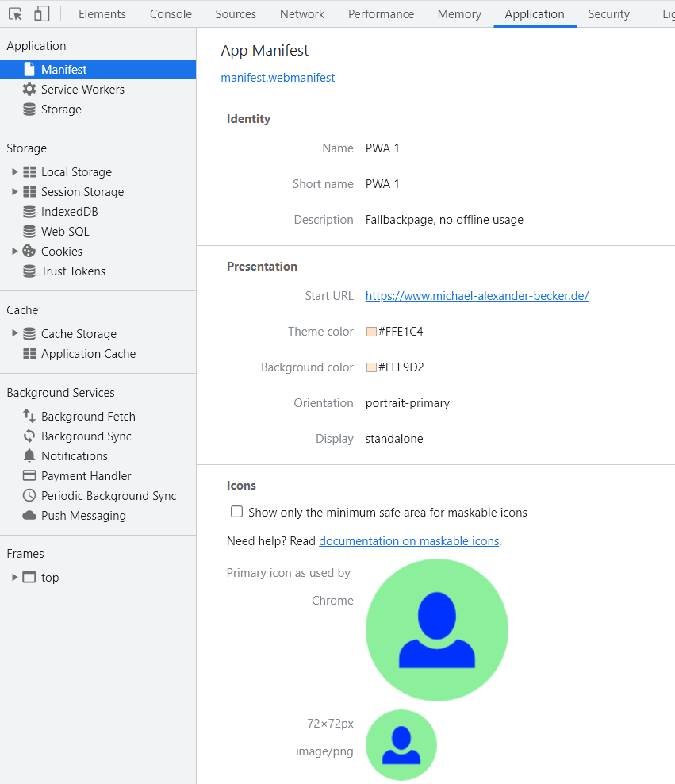

Der erste Schritt für die Erstellung der installierbaren PWA ist das Web-App-Manifest.
Es befindet sich im root-Verzeichnis des Projektes und beschreibt die Eigenschaften einer PWA.
Dadurch macht das Manifest die PWA über den Browser für alle Endgeräte installierbar.
Die Datei liegt im JSON Format vor (.JSON oder .webmanifest) und wird im Head aller HTML-Seiten verlinkt.
<link rel="manifest" href="manifest.webmanifest">
Das Manifest wird von Chrome, Edge, Opera, Firefox, UC Browser
und dem Browser von Samsung vollständig unterstützt.
Da die Anforderungen der verschiedenen Browser an ein Web-App-Manifest
teilweise etwas voneinander abweichen, wird der Wizard sich auf die
Anforderungen von Google Chrome stützen.
Lediglich Safari unterstützt das Web-App-Manifest nur teilweise.
Welche Anforderungen sich konkret voneinander unterscheiden,
ist hier zu finden.
Die Mindestanforderungen für ein Web-App-Manifest in Chrome sind die folgenden:
short_name oder name
192x192 Icon
512x512 Icon
start_url - gibt an, wo die Anwendung gestartet werden soll
display - muss auf fullscreen, standalone oder minimal-ui gesetzt sein
prefer_related_applications - darf nicht vorhanden sein oder muss auf false gesetzt werden
Weitere Elemente, die im Web-App-Manifest gesetzt werden können, sind hier zu finden.
Eine der Eigenschaften von "name" oder "short_name" muss enthalten sein.
Bei einem längeren Namen der PWA kann es jedoch auch durchaus sinnvoll sein, beide Eigenschaften anzugeben.
Wenn beide angegeben werden, wird die Eigenschaft "short_name" an Stellen verwendet, an denen der Platz begrenzt ist.
Die Eigenschaft "name" wird hingegen angezeigt, wenn die App installiert wurde.
Das Web-App-Manifest muss mindestens ein Icon der Größe 192x192 und eins der Größe 512x512 enthalten.
Die Eigenschaft Icon ist ein Array und kann beliebig viele Icons enthalten.
Jedes Icon muss dabei eine Quelle ("src"), einen Typ ("type")
und eine Größe ("size") als Attribut haben.
Des Weiteren sollte es mindestens ein Icon mit "purpuse": "maskable any" für die Unterstüzung
des Betriebssystems Android geben
Die Eigenschaft "start_url" im Manifest gibt die URL an, die geladen wird,
wenn ein Benutzer die Anwendung von einem Gerät startet.
Mit Hilfe der Eigenschaft "display" kann eingestellt werden, wie die PWA dargestellt werden soll.
Standalone ist dabei die Eigenschaft, die die PWA noch mehr einer nativen App ähneln lässt, da keine URL oder
andere für Browser typischen Dinge angezeigt werden.
Das Web-App-Manifest des Beispiels enthält neben den Mindestanforderungen noch einige andere Eigenschaften,
wie eine Beschreibung ("description"), die Farbgebung der PWA als installierte Version ("background_color",
die "theme_color") und die Orientierung ("orientation").
Die Orientierung gibt an, wie die PWA geöffnet wird.
Des Weiteren sind neben den beiden gezeigten noch 6 weitere Icons in anderen Größen im Web-App-Manifest enthalten.
Je mehr Größen angegeben werden, desto besser kann sich das entsprechende Endgerät aussuchen, welche Icongröße am besten passt.
Um nach der Fertigstellung des Web-App-Manifests zu überprüfen, ob es richtig eingebunden ist und um zu sehen, ob der Browser
alle eingegeben Elemente erkennt, kann in Chrome mit Rechtsklick "Untersuchen" ausgewählt werden.
Daraufhin kann unter "Application" das Manifest ausgewählt und auf Fehler überprüft werden.

Dabei werden, bei richtiger Einbindung, alle im Manifest festgelegten Bestandteile aufgelistet.
Wenn Fehler auftreten, ist zunächst die Art des Einbindens, dann die "start_url" und als letztes die Rechtschreibung der
Attribute des Manifests zu überprüfen.
Im Beispiel sieht man, dass alle Eigenschaften der Manifest-Datei auch im Browser angezeigt werden und somit funktionieren.
Besonderheiten:
Aufgrund dessen, dass das Apple Betriebssystem iOS die "icons"
und die "theme_color" nicht unterstützt, muss die PWA dahingehend etwas modifiziert werden.
Für die Unterstützung des Icon auf dem Homebildschirm muss dabei im Head jeder HTML-Seite eine Verlinkung
zu dem Icon eingebunden werden, das bei iOS-Benutzern verwendet werden soll.
Außerdem muss für die PWA-Optimierung für alle Betriebssysteme neben dem Festlegen der "theme_color" im Web-App-Manifest,
diese ebenfalls im Head jeder HTML-Seite hinterlegt sein.